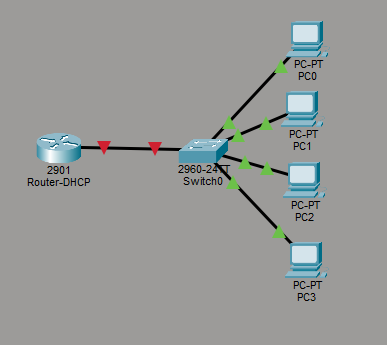
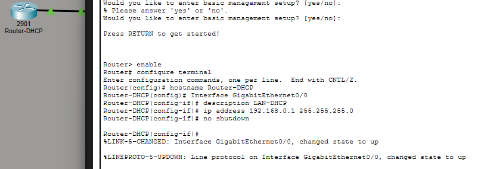
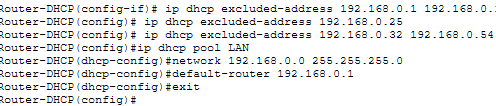
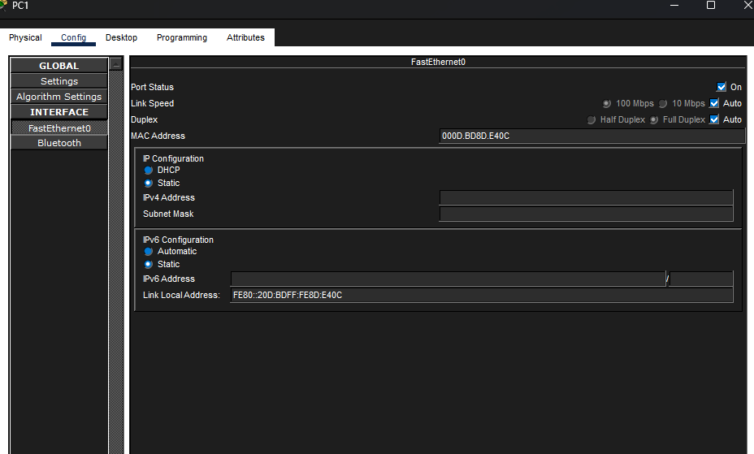
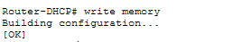
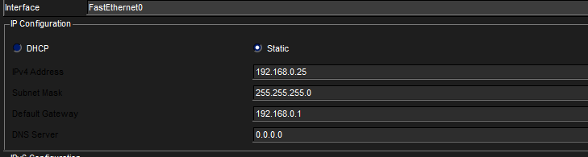

Obiettivi e prerequisiti
Al termine di questo laboratorio sarai in grado di:
- Costruire una topologia in Cisco Packet Tracer con un router 2901, uno switch 2960 e quattro PC client.
- Configurare l'interfaccia LAN
GigabitEthernet0/0del router tramite IOS CLI. - Attivare il servizio DHCP nativo di IOS con pool dinamico e indirizzi esclusi.
- Creare un pool di prenotazione (host pool) che garantisce sempre lo stesso IP a PC-2 tramite binding MAC↔IP.
- Assegnare un indirizzo statico a PC-1, escluso dallo scope con il comando
ip dhcp excluded-address. - Verificare la configurazione con
show ip dhcp pool,show ip dhcp binding,ipconfigeping.
Prerequisiti
- Conoscenza dell'indirizzamento IPv4 e del subnetting /24.
- Nozioni sul protocollo DHCP (processo DORA).
- Familiarità di base con la CLI IOS (modalità privilegiata e di configurazione globale).
- Cisco Packet Tracer 8.x installato sul proprio computer.
.pkt con Ctrl+S. Packet Tracer non prevede il salvataggio automatico.
Richiami teorici sul DHCP
Il protocollo DHCP (Dynamic Host Configuration Protocol, RFC 2131) assegna automaticamente ai client i parametri di rete: indirizzo IP, subnet mask, gateway predefinito e server DNS.
Il processo DORA
DHCPDISCOVER cercando un server disponibile sulla rete locale.DHCPOFFER contenente un IP disponibile e i parametri di rete.DHCPREQUEST in broadcast, notificando tutti i server della propria scelta.DHCPACK. Il client è ora configurato e operativo sulla rete.Concetti chiave dello scope DHCP su IOS
| Termine IOS | Significato |
|---|---|
ip dhcp pool | Crea un pool DHCP. Può essere dinamico (network) o di prenotazione (host). |
ip dhcp excluded-address | Dichiarazione globale degli IP che il router non assegnerà mai (router stesso, host statici, range fuori scope). |
host | Direttiva del pool che riserva un IP a un singolo client identificato tramite MAC. |
hardware-address | MAC address del client a cui è destinata la prenotazione. |
default-router | Gateway predefinito comunicato ai client. Corrisponde all'IP dell'interfaccia LAN del router. |
192.168.0.0/24. Questa è la configurazione tipica nelle reti di piccole e medie dimensioni.
Pianificazione della topologia
Prima di aprire Packet Tracer pianifica l'indirizzamento su carta. La tabella seguente riassume tutti i parametri che utilizzeremo.
| Dispositivo | Interfaccia | Indirizzo IP | Subnet Mask | Modalità | Note |
|---|---|---|---|---|---|
| Router 2901 | GigabitEthernet0/0 |
192.168.0.1 |
255.255.255.0 |
IOS CLI | Gateway + server DHCP |
| PC-1 | FastEthernet0 |
192.168.0.25 |
255.255.255.0 |
Statico | Escluso dallo scope sul router |
| PC-2 | FastEthernet0 |
192.168.0.20 |
255.255.255.0 |
Prenotato | Host pool MAC↔IP sul router |
| PC-3 | FastEthernet0 |
Dinamico | 255.255.255.0 |
DHCP | Qualsiasi IP disponibile |
| PC-4 | FastEthernet0 |
Dinamico | 255.255.255.0 |
DHCP | Qualsiasi IP disponibile |
Parametri dello scope DHCP
| Parametro | Comando IOS | Valore |
|---|---|---|
| Escludi router + indirizzi pre-scope | ip dhcp excluded-address | 192.168.0.1 – .15 |
| Escludi IP statico PC-1 | ip dhcp excluded-address | 192.168.0.25 |
| Escludi indirizzi post-scope | ip dhcp excluded-address | 192.168.0.32 – .254 |
| Range dinamico effettivo | — (per differenza) | 192.168.0.16 – .31 (16 addr.) |
| Prenotazione PC-2 | host + hardware-address | 192.168.0.20 ↔ MAC PC-2 |
| Gateway | default-router | 192.168.0.1 |
ip dhcp excluded-address lavora a livello globale: si specifica ciò che non deve essere assegnato e si definisce poi il pool sull'intera rete /24. Il router assegnerà solo gli indirizzi che non figurano nell'elenco degli esclusi. Questo approccio è più flessibile dell'indicare un range di start/end.
Diagramma della topologia
Creazione della topologia in Packet Tracer
Apri Cisco Packet Tracer e crea un nuovo file vuoto (File → New).
Aggiunta dei dispositivi
Router-DHCP facendo doppio clic sull'etichetta.Switch0 e posizionalo al centro.PC-1, PC-2, PC-3, PC-4. Disponili attorno allo switch.GigabitEthernet (Gi0/0 e Gi0/1). In questo lab utilizziamo solo Gi0/0. A differenza degli switch, le interfacce del router sono administratively down per default e richiedono il comando no shutdown per essere attivate.

Collegamento dei cavi
Router-DHCP porta GigabitEthernet0/0 → Switch0 porta FastEthernet0/1.PC-1 → Fa0/2 | PC-2 → Fa0/3 | PC-3 → Fa0/4 | PC-4 → Fa0/5
no shutdown nella sezione successiva. I link PC–switch diventeranno verdi subito.
Configurazione DHCP sul router Cisco 2901
Tutta la configurazione avviene tramite la CLI IOS. Fai doppio clic su Router-DHCP, seleziona la scheda CLI e premi Enter per iniziare.
5.1 – Accesso alla modalità di configurazione globale
Router> enable
Router# configure terminal
Enter configuration commands, one per line. End with CNTL/Z.
Router(config)# hostname Router-DHCP
Router-DHCP(config)#enable → passa da User EXEC (>) a Privileged EXEC (#).
configure terminal → entra in Global Configuration ((config)#).
interface Gi0/0 → entra in Interface Configuration ((config-if)#).
ip dhcp pool → entra in DHCP Pool Configuration ((dhcp-config)#).
exit risale di un livello; end torna direttamente a Privileged EXEC.
5.2 – Configurazione dell'interfaccia LAN (GigabitEthernet0/0)
Router-DHCP(config)# interface GigabitEthernet0/0
Router-DHCP(config-if)# description LAN-DHCP
Router-DHCP(config-if)# ip address 192.168.0.1 255.255.255.0
Router-DHCP(config-if)# no shutdown
Router-DHCP(config-if)# exitDopo no shutdown IOS stamperà i messaggi di link-up:
%LINK-5-CHANGED: Interface GigabitEthernet0/0, changed state to up
%LINEPROTO-5-UPDOWN: Line protocol on Interface GigabitEthernet0/0, changed state to upIl link router–switch nell'area di lavoro diventerà verde.

5.3 – Dichiarazione degli indirizzi esclusi
Prima di creare i pool è obbligatorio dichiarare tutti gli indirizzi che il router non deve assegnare.
! 1) Escludi il router stesso e tutti gli indirizzi prima dello scope
Router-DHCP(config)# ip dhcp excluded-address 192.168.0.1 192.168.0.15
! 2) Escludi l'IP statico di PC-1 (cade dentro lo scope .16-.31)
Router-DHCP(config)# ip dhcp excluded-address 192.168.0.25
! 3) Escludi tutti gli indirizzi oltre il limite superiore dello scope
Router-DHCP(config)# ip dhcp excluded-address 192.168.0.32 192.168.0.2545.4 – Creazione del pool DHCP principale (LAN)
Il pool LAN gestisce l'assegnazione dinamica per PC-3, PC-4 e qualsiasi client futuro nell'intervallo consentito.
Router-DHCP(config)# ip dhcp pool LAN
! Dichiara la rete su cui opera il pool (intera /24)
Router-DHCP(dhcp-config)# network 192.168.0.0 255.255.255.0
! Gateway predefinito che verrà comunicato ai client
Router-DHCP(dhcp-config)# default-router 192.168.0.1
Router-DHCP(dhcp-config)# exit192.168.0.16 a 192.168.0.31, saltando .20 (prenotazione PC-2) e .25 (statico PC-1). Il risultato è uno scope di 16 indirizzi con 14 effettivamente disponibili per l'assegnazione dinamica.

5.5 – Lettura del MAC address di PC-2
Prima di creare il pool di prenotazione occorre conoscere il MAC address di PC-2.
PC-2 → scheda Config → voce FastEthernet0 nel pannello sinistro.XXXX.XXXX.XXXX. Ti servirà nel passo successivo.
5.6 – Creazione del pool di prenotazione per PC-2 (DA NON FARE !!!)
Il pool PC2-RESERVED usa la direttiva host per legare un IP specifico al MAC di PC-2. Sostituisci xxxx.xxxx.xxxx con il MAC reale annotato nel passo precedente.
Router-DHCP(config)# ip dhcp pool PC2-RESERVED
! Prenotazione su singolo host (non su rete)
Router-DHCP(dhcp-config)# host 192.168.0.20 255.255.255.0
! MAC address di PC-2 — sostituisci con il valore reale
Router-DHCP(dhcp-config)# hardware-address xxxx.xxxx.xxxx
! Gateway per il client prenotato
Router-DHCP(dhcp-config)# default-router 192.168.0.1
Router-DHCP(dhcp-config)# exithardware-address usa il MAC address Layer 2 (ideale per PC). client-identifier usa l'opzione DHCP 61 inviata dal client, che in Windows viene composta prefissando 01 al MAC. In Packet Tracer il comando hardware-address è il più affidabile con i PC-PT.
5.7 – Salvataggio della configurazione
Router-DHCP(config)# end
Router-DHCP# write memory
Building configuration...
[OK]write memory è l'abbreviazione di copy running-config startup-config: copia la running-config dalla RAM alla NVRAM, rendendola persistente.

5.8 – Configurazione completa del router (riepilogo)
Di seguito la configurazione integrale che puoi confrontare con il tuo file di lavoro usando il comando show running-config:
hostname Router-DHCP
!
! ─── Indirizzi esclusi dallo scope DHCP ────────────────────────
ip dhcp excluded-address 192.168.0.1 192.168.0.15
ip dhcp excluded-address 192.168.0.25
ip dhcp excluded-address 192.168.0.32 192.168.0.254
!
! ─── Pool principale: assegnazione dinamica (.16–.31) ──────────
ip dhcp pool LAN
network 192.168.0.0 255.255.255.0
default-router 192.168.0.1
!
! ─── Pool prenotazione: PC-2 riceve sempre .20 ─────────────────
ip dhcp pool PC2-RESERVED
host 192.168.0.20 255.255.255.0
hardware-address xxxx.xxxx.xxxx ← MAC reale di PC-2
default-router 192.168.0.1
!
! ─── Interfaccia LAN ───────────────────────────────────────────
interface GigabitEthernet0/0
description LAN-DHCP
ip address 192.168.0.1 255.255.255.0
no shutdown
!Configurazione PC-1 — Indirizzo IP statico
PC-1 usa l'indirizzo 192.168.0.25 in modo statico. L'indirizzo cade dentro lo scope (.16–.31), ma è già stato escluso sul router con ip dhcp excluded-address 192.168.0.25: il server non lo assegnerà mai a nessun altro client.
PC-1.IP Address : 192.168.0.25
Subnet Mask : 255.255.255.0
Default Gateway: 192.168.0.1 ← interfaccia Gi0/0 del router.16 o successivo) perdendo il suo indirizzo fisso previsto dal progetto di rete.

Configurazione PC-2 — Indirizzo riservato (Aggiungerlo semplicemente come IP Statico)
PC-2 riceve sempre l'indirizzo 192.168.0.20 grazie al pool PC2-RESERVED configurato sul router. A differenza di PC-1, PC-2 è impostato in modalità DHCP: sarà il router a garantirgli sempre lo stesso IP tramite la corrispondenza MAC↔IP.
PC-2 → Desktop → IP Configuration.192.168.0.20.192.168.0.20 · Mask 255.255.255.0 · Gateway 192.168.0.1.show ip dhcp pool PC2-RESERVED. Verifica che il MAC nel campo hardware-address corrisponda esattamente a quello di PC-2. Anche un singolo carattere errato impedisce il match e il client riceverà un IP dinamico dal pool LAN.
Configurazione PC-3 e PC-4 — Client DHCP dinamici
PC-3 e PC-4 riceveranno un indirizzo IP disponibile nel range 192.168.0.16–.31 (esclusi .20 riservato a PC-2 e .25 statico di PC-1). La procedura è identica per entrambi.
PC-3 → Desktop → IP Configuration..16 in poi), subnet mask e default gateway 192.168.0.1.PC-4: riceverà l'IP successivo disponibile nello scope.show interfaces GigabitEthernet0/0: deve mostrare GigabitEthernet0/0 is up, line protocol is up.
Test e verifica della rete
Verifica il corretto funzionamento sia dalla CLI del router che dal Command Prompt dei PC client.
9.1 – Verifica sul router: show ip dhcp pool
Router-DHCP# show ip dhcp pool
Pool LAN :
Utilization mark (high/low) : 100 / 0
Subnet size (first/next) : 0 / 0
Total addresses : 254
Leased addresses : 2 ← PC-3 e PC-4
Excluded addresses : 3 ← esclusi globali
Pending event : none
1 subnet is currently in the pool :
Current index IP address range Leased/Excluded/Total
192.168.0.17 192.168.0.1 - 192.168.0.254 2 / 3 / 254
Pool PC2-RESERVED :
Utilization mark (high/low) : 100 / 0
Subnet size (first/next) : 0 / 0
Total addresses : 1
Leased addresses : 1 ← PC-2
Excluded addresses : 0
Pending event : none9.2 – Verifica sul router: show ip dhcp binding
Router-DHCP# show ip dhcp binding
Bindings from all pools not associated with VRF:
IP address Client-ID/ Lease expiration Type
Hardware address/
User name
192.168.0.20 xxxx.xxxx.xxxx -- Manual
192.168.0.16 yyyy.yyyy.yyyy Mar 07 2026 04:00 AM Automatic
192.168.0.17 zzzz.zzzz.zzzz Mar 07 2026 04:00 AM AutomaticLa colonna Type mostra: Manual per la prenotazione di PC-2 (senza scadenza) e Automatic per i binding dinamici di PC-3 e PC-4 con scadenza a 12 ore.
9.3 – Verifica sui client: ipconfig
Apri il Command Prompt di PC-3 (Desktop → Command Prompt):
C:\> ipconfig
FastEthernet0 Connection:(default port)
IPv4 Address. . . . . . . . . . .: 192.168.0.16
Subnet Mask . . . . . . . . . . .: 255.255.255.0
Default Gateway . . . . . . . . .: 192.168.0.1192.168.0.1 perché il router comunica il proprio IP tramite la direttiva default-router del pool DHCP. Questo permette ai client di raggiungere reti esterne, se il router avesse un'altra interfaccia WAN configurata.
9.4 – Test di connettività: ping
# Da PC-3 → verifica raggiungibilità del gateway (router)
C:\> ping 192.168.0.1
# Da PC-3 → verifica raggiungibilità di PC-1 (statico)
C:\> ping 192.168.0.25
# Da PC-3 → verifica raggiungibilità di PC-2 (prenotato)
C:\> ping 192.168.0.20
# Da PC-3 → verifica raggiungibilità di PC-4 (dinamico)
C:\> ping <IP-di-PC-4>9.5 – Simulazione del processo DORA in Simulation Mode
La modalità Simulation di Packet Tracer permette di rallentare il tempo di rete e di ispezionare ogni singolo pacchetto scambiato tra i dispositivi. In questa sezione seguiremo i quattro passi del processo DORA passo-passo, aprendo il PDU Inspector per leggere i campi significativi di ciascun messaggio DHCP.
Preparazione dell'ambiente di simulazione
PC-4 → Desktop → IP Configuration. Seleziona Static, lascia i campi vuoti, poi seleziona di nuovo DHCP. Questa operazione forza PC-4 a rilasciare l'eventuale configurazione precedente e a inviare un nuovo DHCPDISCOVER.DHCPOFFER destinato direttamente a quel MAC. Il processo DORA avviene comunque, ma è più istruttivo osservarlo su PC-4 che ottiene un IP dinamico dal pool LAN, perché il traffico broadcast è più evidente nella topologia.
Passo 1 — DHCPDISCOVER (PC-4 → broadcast)
Clicca una volta sul pulsante Capture / Forward (▶|). Nella Event List apparirà la prima voce: un pacchetto DHCP di tipo DHCPDISCOVER originato da PC-4.
Nell'area di lavoro noterai un'envelope animata che si propaga a tutti i dispositivi collegati allo switch: si tratta di un pacchetto broadcast (indirizzo IP di destinazione 255.255.255.0, MAC di destinazione FF:FF:FF:FF:FF:FF).
Clicca sull'envelope (o sulla riga nella Event List) per aprire il PDU Inspector. Esamina le schede:
| Scheda PDU | Campo da osservare | Valore atteso |
|---|---|---|
| OSI Model | Layer 3 – Src IP | 0.0.0.0 — il client non ha ancora un IP |
| OSI Model | Layer 3 – Dst IP | 255.255.255.0 — broadcast limitato |
| OSI Model | Layer 2 – Dst MAC | FFFF.FFFF.FFFF — broadcast Ethernet |
| Inbound / Outbound PDU | DHCP Message Type | 1 = DHCPDISCOVER |
| Inbound / Outbound PDU | Client IP Address (ciaddr) | 0.0.0.0 |
| Inbound / Outbound PDU | Client Hardware Address (chaddr) | MAC di PC-4 |
Passo 2 — DHCPOFFER (Router-DHCP → PC-4)
Clicca di nuovo su Capture / Forward. Il router elabora il Discover e risponde con un DHCPOFFER. Nell'area di lavoro l'envelope si sposta ora dal router verso PC-4.
Apri il PDU Inspector di questo pacchetto e verifica:
| Scheda PDU | Campo da osservare | Valore atteso |
|---|---|---|
| OSI Model | Layer 3 – Src IP | 192.168.0.1 — l'interfaccia Gi0/0 del router |
| OSI Model | Layer 3 – Dst IP | 255.255.255.0 oppure IP offerto (dipende dall'implementazione) |
| Inbound / Outbound PDU | DHCP Message Type | 2 = DHCPOFFER |
| Inbound / Outbound PDU | Your IP Address (yiaddr) | 192.168.0.16 (o il primo IP libero dello scope) |
| Inbound / Outbound PDU | Options: Subnet Mask | 255.255.255.0 |
| Inbound / Outbound PDU | Options: Router (gateway) | 192.168.0.1 |
yiaddr) contiene l'indirizzo IP che il server sta offrendo al client. Il client legge questo campo per sapere quale IP potrà richiedere nel passo successivo (DHCPREQUEST). Il server si riserva provvisoriamente quell'IP fino al completamento del processo DORA.
Passo 3 — DHCPREQUEST (PC-4 → broadcast)
Clicca ancora su Capture / Forward. PC-4 ha ricevuto l'offerta e ora la accetta formalmente inviando un DHCPREQUEST in broadcast. Il broadcast è intenzionale: serve a notificare tutti i possibili server DHCP presenti sulla rete che il client ha scelto questa offerta specifica, permettendo agli altri server (se presenti) di ritirare le proprie offerte concorrenti.
Verifica nel PDU Inspector:
| Scheda PDU | Campo da osservare | Valore atteso |
|---|---|---|
| OSI Model | Layer 3 – Src IP | 0.0.0.0 — il client non usa ancora l'IP offerto |
| OSI Model | Layer 3 – Dst IP | 255.255.255.0 — ancora broadcast |
| Inbound / Outbound PDU | DHCP Message Type | 3 = DHCPREQUEST |
| Inbound / Outbound PDU | Options: Requested IP Address | 192.168.0.16 — l'IP ricevuto nell'Offer |
| Inbound / Outbound PDU | Options: DHCP Server Identifier | 192.168.0.1 — indica quale server è stato scelto |
Passo 4 — DHCPACK (Router-DHCP → PC-4)
Clicca un'ultima volta su Capture / Forward. Il router riceve il DHCPREQUEST, verifica che l'IP richiesto sia ancora disponibile e risponde con un DHCPACK (Acknowledgement). Questo è il messaggio che ufficializza l'assegnazione: da questo momento PC-4 può utilizzare l'IP ricevuto.
Dopo questo passaggio, torna su PC-4 → Desktop → IP Configuration: dovresti vedere i campi compilati con i valori definitivi.
| Scheda PDU | Campo da osservare | Valore atteso |
|---|---|---|
| OSI Model | Layer 3 – Src IP | 192.168.0.1 |
| Inbound / Outbound PDU | DHCP Message Type | 5 = DHCPACK |
| Inbound / Outbound PDU | Your IP Address (yiaddr) | 192.168.0.16 — IP definitivamente assegnato |
| Inbound / Outbound PDU | Options: Router (gateway) | 192.168.0.1 |
| Inbound / Outbound PDU | Options: Subnet Mask | 255.255.255.0 |
Riepilogo visivo della Event List
Al termine dei quattro passi la Event List mostrerà la seguente sequenza. Puoi cliccare su ciascuna riga per riaprire il PDU Inspector in qualsiasi momento.
| # | Evento | Sorgente | Destinazione | Tipo | Significato |
|---|---|---|---|---|---|
| 1 | DHCPDISCOVER | PC-4 (0.0.0.0) |
Broadcast (255.255.255.0) |
UDP 67/68 | "C'è un server DHCP in rete? Ho bisogno di un IP." |
| 2 | DHCPOFFER | Router (192.168.0.1) |
Broadcast / PC-4 | UDP 67/68 | "Sì, ti offro l'IP 192.168.0.16." |
| 3 | DHCPREQUEST | PC-4 (0.0.0.0) |
Broadcast (255.255.255.0) |
UDP 67/68 | "Accetto l'offerta del server 192.168.0.1 per l'IP 192.168.0.16." |
| 4 | DHCPACK | Router (192.168.0.1) |
PC-4 | UDP 67/68 | "Confermato. L'IP 192.168.0.16 è tuo." |
9.6 – Riepilogo dei risultati attesi
| Dispositivo | IP atteso | Gateway | Metodo | ✅ Verifica |
|---|---|---|---|---|
| Router-DHCP (Gi0/0) | 192.168.0.1 |
— | IOS ip address |
show interfaces Gi0/0 |
| PC-1 | 192.168.0.25 |
192.168.0.1 |
Statico manuale | ipconfig su PC-1 |
| PC-2 | 192.168.0.20 |
192.168.0.1 |
DHCP prenotato (Manual) | show ip dhcp binding |
| PC-3 | .16–.31 (esclusi .20, .25) |
192.168.0.1 |
DHCP dinamico | ipconfig + ping → router |
| PC-4 | .16–.31 (esclusi .20, .25, IP PC-3) |
192.168.0.1 |
DHCP dinamico | ipconfig + ping → router |
Verifica di apprendimento
Rispondi alle domande seguenti per verificare di aver compreso i concetti chiave. Clicca su "Mostra risposta" per vedere la soluzione.
Mostra risposta
Se il pool viene creato prima delle esclusioni, il router potrebbe assegnare uno degli indirizzi da escludere durante la breve finestra precedente alla dichiarazione. Configurando prima le esclusioni con ip dhcp excluded-address, IOS le considera immediatamente operative e non inserisce mai quegli indirizzi nel pool disponibile.
network e il comando host all'interno di un pool DHCP IOS?Mostra risposta
network <net> <mask> crea un pool dinamico da cui il router assegna indirizzi disponibili a qualsiasi client. host <IP> <mask> crea invece un pool di prenotazione per un singolo host identificato da MAC (o client-id): solo quel client specifico riceverà quell'IP, sempre e comunque.
show ip dhcp binding e come si distingue un binding Manual da uno Automatic?Mostra risposta
Il comando elenca tutti gli indirizzi IP attualmente assegnati dal server DHCP del router, con il MAC del client, la scadenza e il tipo. Un binding Manual corrisponde a una prenotazione host pool: non ha scadenza perché è legato permanentemente a un MAC. Un binding Automatic è assegnato dinamicamente dal pool LAN.
no shutdown sull'interfaccia GigabitEthernet0/0 del router?Mostra risposta
Tutte le interfacce di un router Cisco IOS sono in stato administratively down per default: il sistema operativo le disabilita per sicurezza alla prima accensione. Il comando no shutdown le porta nello stato operativo (up/up). Senza di esso l'interfaccia non trasmette né riceve traffico, nemmeno se configurata con un indirizzo IP corretto. Gli switch Cisco, al contrario, hanno le porte attive di default.
write memory e non salvare la configurazione? Cosa succede al riavvio del router?Mostra risposta
La running-config risiede in RAM ed è volatile: viene persa a ogni spegnimento o riavvio. write memory (equivalente a copy running-config startup-config) copia la configurazione attiva nella NVRAM come startup-config. Al riavvio il router carica la startup-config dalla NVRAM. Senza il salvataggio, al riavvio tutti i pool DHCP, le esclusioni e la configurazione dell'interfaccia vengono persi e il router riparte in stato di fabbrica (o con l'ultima configurazione salvata precedentemente).